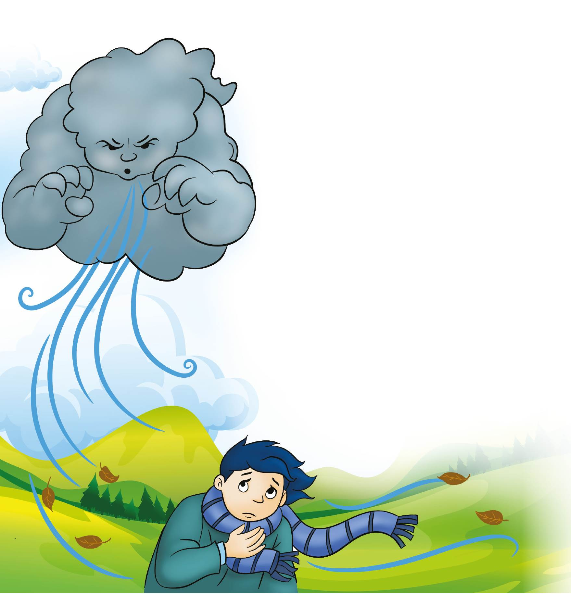

Reflexiono para avanzar
Alumno:
Reflexiono para avanzar
Alumno:
Formen grupos y lean el siguiente texto. Personifiquen a cada tipo de viento que se cuenta en la historia, ¿cómo lo harían? amigos.
El viento que recorre páramos y valles no es uno solo, son varios, son una familia entera, numerosa y variada. Como en toda familia hay miembros buenos... y otros que no lo son tanto.
Está el viento del cerro, que sopla en las alturas y causa el soroche, más conocido como el mal de montaña. Otro es el viento de la muerte, o Wañunahuaira, que precede al muertito que viene con permiso del más allá, a cenar en la casa de su viuda la noche de difuntos. Este viento es el que abre la puerta por donde luego ha de pasar el difunto, es el que anuncia a las almas en pena, cuyo silbido es capaz de helar la sangre hasta al más valiente. El Ninahuaira habita en todo lado, se introduce en la gente que se encuentra débil, abrazándolas con fuertes fiebres.
De toda esa familia de vientos, el más soplador y, por lo tanto, el más conocido, es el mal viento o mal aire. Habita quebradas lúgubres y casas abandonadas, es un vaho, una fuerza mágica y maligna, capaz de enfermar a la gente con dolores de cabeza, cansancio y mareos. No lo curan los doctores sino los yáchak, pasándole al enfermo un huevo o el cuy junto con la ruda y la chilca; las plantas ayudan a que el animal o el huevo absorban los males del paciente. Después, para completar el tratamiento, hay que abrazar a un chigualcán, al cual hay que saludarlo respetuosamente como "compadre chigualcán" y, así abrazado, de alguna manera demostrando el mismo respeto... hay que orinar contra su tronco.
Para terminar este asunto, hay que persignarse con una moneda de poco valor y botarla sobre la espalda sin regresarla a ver. Pero el peor de toda la familia de vientos es el Acapana. Este es un diablo y como tal viene bailando y levantando polvo por los caminos en forma de torbellino. Es el más bravo de todos porque no ataca al cuerpo sino al alma de las personas.
Quito: Abya-Yala, pp. 33-34.